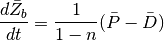
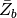
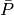
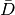
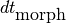
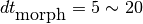

Morphological Evolution¶
Morphological evolution is computed using the sediment continuity equation, in which the time-averaged pickup and deposition rates are used. The sediment continuity equation is written as

where  are the time-averaged depth changes with positive values for erosion and negative values for deposition,  and  are the time averaged pickup and deposition rates averaged over . In Tehranirad et al. (2016),  is recommended to be small enough to capture bed changes induced by tsunami waves. In ship-wake applications, should be smaller than the long wave cases. A specific range of morphological time step () for ship-wake applications, however, needs a further investigation based on numerical simulations carried out against measured data.